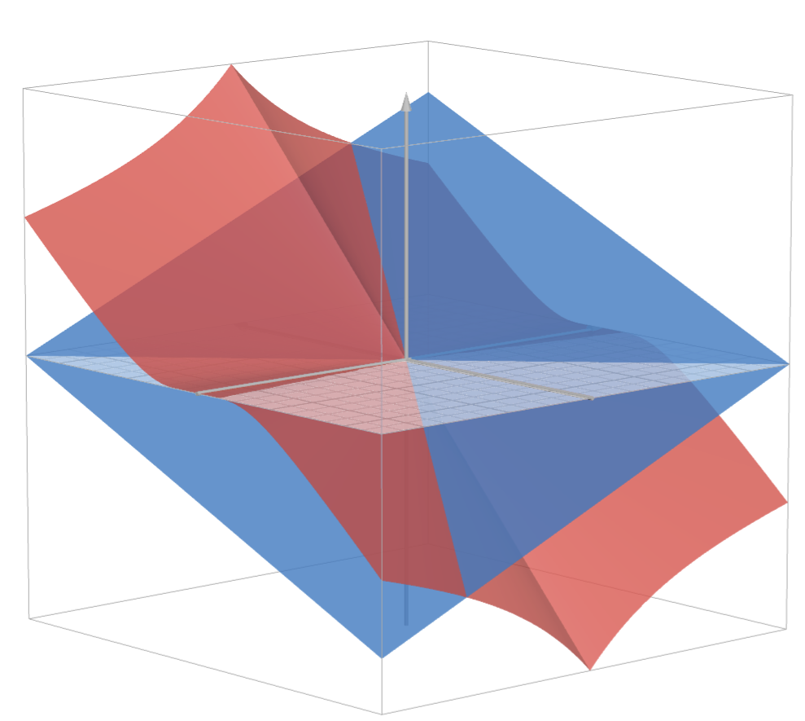

Convex Choice††thanks: We thank Gerrit Bauch, Bo Chen, Laura Doval, Nima Haghpanah, SangMok Lee, Elliot Lipnowski, Michael Ostrovsky, Daniel Rappoport, Joel Sobel, Roland Strausz, Bruno Strulovici, Lina Uhe, Zhihui Wang, Cole Wittbrodt, Yangfan Zhou, and conference and seminar audiences for helpful comments. Kleiner acknowledges financial support from the German Research Foundation (DFG) through Germany’s Excellence Strategy - EXC 2047/2 - 390685813, EXC 2126/2-390838866 and the CRC TR-224 (Project B02).
For multidimensional Euclidean type spaces, we study convex choice: from any choice set, the set of types that make the same choice is convex. We establish that, in a suitable sense, this property characterizes the sufficiency of local incentive constraints. Convex choice is also of interest more broadly, e.g., in cheap-talk games. We tie convex choice to a notion of directional single-crossing differences (DSCD). For an expected-utility agent choosing among lotteries, DSCD implies that preferences are either one-dimensional or must take the affine form that has been tractable in multidimensional mechanism design.
1 Introduction
A fundamental property in economic models with one-dimensional private information is the Spence-Mirrlees single-crossing property. Roughly equivalent to “interval choice”—the set of types for which an action is optimal is an interval—the single-crossing property has many uses. For example, it reduces incentive compatibility (IC) to local IC. Local IC requires only that “nearby” types have no incentive to mimic each other. Sufficiency of local IC is central to the tractability, and hence success, of influential paradigms like signaling and mechanism design.
Our paper is concerned with multidimensional environments. Consider an agent with utility function , where is an allocation or choice variable and is the agent’s type or preference parameter. Let be convex. We study a property we call convex choice: for any choice set and any allocation , the set of types for which is (uniquely) optimal is convex.111Our notion relates the preferences of different types. It is distinct from “convex preferences” in decision theory, which refers to the following property of a single preference relation: if is preferred to , then convex combinations of and (in some suitable sense) are also preferred to .
We view convex choice as compelling. There is a sense in which it characterizes the sufficiency of local IC. More precisely, absent indifferences, convex choice characterizes when IC between any two types is equivalent to local IC along the line segment between those two types (Proposition 1). The necessity of convex choice for such “integration up” of local IC suggests that absent convex choice, a mechanism-design model is unlikely to be tractable.222We also discuss how sufficiency of local IC on the full type space is more or less characterized by a weaker property we call connected choice (Proposition 2); this property does not, however, deliver the tractability of integrating up local IC along line segments. Convex choice is relevant for other reasons as well. For instance, it delivers an extension of Saks and Yu’s (2005) result on the implementability of allocation rules in settings with transfers (Proposition 3). It also offers a natural generalization of “interval equilibria” in multidimensional versions of Crawford and Sobel’s (1982) famous cheap-talk model.
Proposition 4 shows that convex choice is essentially equivalent to a form of single crossing that we term directional single-crossing differences (DSCD). Modulo details, DSCD requires that for any two (undominated) allocations, the set of types that prefer one to the other is defined by a half-space. Importantly, the orientation of the half-space can vary with the allocation pair. With , leading examples of DSCD are the quadratic-loss utility , where is the Euclidean norm, and the constant-elasticity-of-substitution utility with parameters .
Studies of multidimensional mechanism design frequently assume the affine form (e.g., Armstrong, 1996; Rochet and Choné, 1998; Manelli and Vincent, 2007; Kleiner, 2026). Our approach delivers a novel perspective on this specification. Propositions 5 and 6 show that if the convex choice/DSCD requirement is strengthened to hold for expected utility over allocation lotteries, then—subject to some regularity conditions—either the setting is effectively one-dimensional, or preferences can be represented in the affine form. In particular, this provides a justification for the common focus on quadratic-loss utility: when preferences depend only on the distance between allocation and type, essentially only quadratic loss with a weighted Euclidean norm has DSCD over lotteries.
One interpretation of these results is that when allocation lotteries are important, multidimensional mechanism design is unlikely to be generally tractable beyond the affine form. By “tractable”, we mean finding a useful characterization of the set of IC mechanisms, which is the first step in the canonical Myersonian approach (Myerson, 1981), prior to optimization. Lotteries may be inescapable when stochastic mechanisms are allowed or when there are other agents and Bayesian incentive constraints are considered. On the flip side, a constructive interpretation of Propositions 5 and 6 is that they provide some guidance for when mechanism designers should focus on alternative, non-Myersonian, approaches; see, for example, Haghpanah and Hartline (2021) in the context of monopoly bundling. In this regard, our Proposition 3 on implementability of allocation rules may be useful for future work.
Related Literature.
As elaborated later, convex choice is closely related to notions in Grandmont (1978) and, in contemporaneous work to ours, Rodriguez (2026) and Wu and Wu (2026). In particular, Grandmont (1978) has a similar characterization to our Proposition 4. Beyond that, our emphasis and results are largely distinct: Grandmont (1978) and Wu and Wu (2026) focus on social choice, and Rodriguez (2026) on cheap talk; none of these papers relate convex choice to the sufficiency of local IC or implementability in mechanism design, or have any analog to our characterization of DSCD over lotteries.
2 Convex Choice and Applications
There is an agent with type , where is convex. We write for the -th coordinate of , and if for all with strict inequality for some . We denote the line segment between types and by
The agent takes an action, or chooses an allocation, , with preferences given by the utility function . We denote the set of types for whom action is optimal from choice set either strictly or weakly by333Throughout, the “” symbol means “weak subset”.
Definition 1.
has convex choice if for all finite and , the set is convex.
In other words, convex choice requires that from any finite choice set, the set of types that find an action uniquely optimal is convex. It is equivalent to only consider all binary choice sets, as the intersection of convex sets is convex. Convex choice implies that the preferences of any type are “between” those of and , in the sense of Grandmont (1978).444Grandmont’s betweenness notion is stated for binary relations that need not be transitive; so, in his setting, choice from non-binary choice sets may not be well-defined. His notion also imposes some requirements concerning indifference. Ignoring indifferences and assuming transitivity, convex choice is equivalent to the preferences of any being between those of and . Convex choice is also very similar to Rodriguez’s (2026) “convex-regular property”; the notions are equivalent absent indifferences.
Another related, but more substantially different, notion to convex choice is Kartik et al.’s (2024b) “interval choice”. They require that if and some action is optimal for and , then it is also optimal for . (Those authors use weak optimality whereas we use strict optimality; this difference is minor.) Absent indifferences, convex and interval choice are equivalent when , but they are incomparable when is multidimensional (Example B.1). Convex sets are, of course, a generalization of one-dimensional intervals to multiple dimensions. We will discuss yet another alternative, connected sets, subsequently.
The interpretation of convex choice in any context depends on what the agent’s type represents. Although we are formally studying a single-agent choice problem, we view the agent’s type as having external economic meaning beyond just parameterizing the agent’s preferences. For instance, the type could represent the agent’s information, ability, or ideology on multiple dimensions, which is relevant to an observer, principal, or politician. We thus take the type space as given, and do not consider reparameterizing it.
2.1 Sufficiency of Local Incentive Constraints
A central question in mechanism design, and information economics more broadly, is when local incentive constraints ensure global ones. To define our notions of incentive compatibility, let denote an open neighborhood—simply neighborhood hereafter—of type in the relative topology of . Throughout, we focus on direct mechanisms ; stochastic mechanisms are subsumed by taking to be a lottery space.
Definition 2.
A mechanism is
-
1.
incentive compatible (IC) if for all ;
-
2.
locally IC if for each there is a neighborhood such that
(LIC)
We will also refer to (local) IC of mechanisms defined on a subset of the type space ; that simply refers to Definition 2 with in place of .
IC is a standard and fundamental property. Our formulation of local IC follows Carroll (2012): for every type , there is a set of nearby types for which (i) cannot profitably mimic those types and (ii) those types cannot profitably mimic . Requirement (ii) here is due to the non-discrete type space, and cannot be dispensed with.555Here is an example. , , , and if and only if . For every type , there is such that all types in receive the same allocation ; every type receives its preferred allocation . Hence, every has a neighborhood containing no type that would profitably mimic. Local IC fails, however, because any neighborhood of type contains some types strictly below, all of which would profitably mimic . If we did not rule this out in local IC, then the example would contradict Proposition 1. Carroll (2012, p. 669) makes an analogous point in his framework. When , it is less demanding than imposing only requirement (i) but requiring that all neighborhoods in (LIC) have “size” bounded away from zero.666That is, there is such that for all , the -ball is contained in , where is the Euclidean norm.
Plainly, IC implies local IC (because is a neighborhood of every type). The converse is not true:
Example 1.
, ; types in strictly prefer while all other types strictly prefer . Note that convex choice fails. The mechanism if and if is not IC. But it is locally IC: for every , there is a neighborhood of on which is constant; whereas for type , neither does it prefer to mimic any type nor does any nearby type prefer to mimic it.
We will see that, in a suitable sense, convex choice is necessary for local IC to imply IC. While it is also sufficient when preferences are strict, the next example shows that indifferences are a threat. In the example, preferences are continuous, the type space is one-dimensional, and the strict-preference regions are convex.
Example 2.
, ; types in strictly prefer , types in strictly prefer , and types and are indifferent. The mechanism and for is locally IC: type is indifferent between the two actions, and every other type lies in the open set on which is constant. But it is not IC: every type below strictly prefers reporting .
The problem in Example 2 is the indifference at , which cannot be approached by types that strictly prefer . The next definition rules out such indifferences.
Definition 3.
has segment-thin indifferences if for all and , imply there is a sequence such that and for all .
An implication of segment-thin indifferences is that for any two actions, if some type strictly prefers one of the actions then the set of types that are indifferent has empty interior. Given convex choice, segment-thin indifferences is a weak requirement; in particular, it trivially holds when there are no indifferences. The conjunction of convex choice and segment-thin indifferences is equivalent to: for all and all , if and , then for all .
We can now state our first main result.
Proposition 1.
The following are equivalent:
-
1.
has convex choice and segment-thin indifferences;
-
2.
for any line segment and any mechanism , if is locally IC then it is IC.
(All proofs are in the appendices.)
The proposition says that convex choice and segment-thin indifferences jointly characterize when IC between any two types and can be determined by just checking local IC along the line segment . Such “integration up” is a common strategy used to verify IC.
Examples 1 and 2 are illustrative of the general argument for why both convex choice and segment-thin indifferences are necessary for Proposition 1’s second statement. Here is a heuristic sketch for why convex choice is sufficient when there are no indifferences. Take any and . Consider a fine grid of types traversing the line segment . We can regard local IC as implying , , and . Absent indifferences, all those inequalities are strict when the compared allocations differ, as we suppose for this sketch. Convex choice then implies ; otherwise, both and strictly (absent indifferences) prefer to , hence so must , a contradiction. Iterating this logic, using the combination of local IC and convex choice each time, yields for all . Consequently, .
Local IC on the full type space implies local IC on every line segment.777Formally, if is locally IC, then for every line segment , the mechanism defined by is locally IC (on ). Hence, Proposition 1 implies that convex choice, together with segment-thin indifferences, ensures sufficiency of local IC on the full type space. But sufficiency on the full type space does not require convex choice, even assuming segment-thin (or no) indifferences. What matters instead is that from any finite choice set, the set of types that find an action uniquely optimal is connected.888Recall that a set is connected if it cannot be partitioned into two nonempty separated sets, i.e., sets neither of which intersects the closure of the other.
Definition 4.
has connected choice if for all finite and , the set is connected.
As convex sets are connected, connected choice is weaker than convex choice; indeed, convex choice is connected choice imposed on every line segment, and the notions are equivalent in one dimension.
Our characterization on the full type space also replaces segment-thin indifferences, which is formulated for line segments, with a sister condition. Let denote the closure in .
Definition 5.
has thin indifferences if for all finite and ,
In words, thin indifferences says that from any finite choice set in which some action is uniquely optimal for some type, every type for which that action is optimal is a limit of types for which it is uniquely optimal.
Proposition 2.
Assume that for all , the set is open. The following are equivalent:
-
1.
has connected choice and thin indifferences;
-
2.
every locally IC mechanism with finite range is IC.
Proposition 2 holds verbatim, with the same proof, on any connected topological type space. The intuition for sufficiency of connected choice is as follows. Take a locally IC mechanism with finite range, fix an action in that range, and consider the types for which is uniquely optimal in the range. By local IC, these types must receive if they are near a type that receives . As connected choice makes connected, either all these types receive or none does. In other words, a type cannot be denied its uniquely optimal action in the mechanism’s range if that action goes to another type that also finds it uniquely optimal. The formal proof extends this argument to show there cannot be any violation of IC, using thin indifferences to deal with types whose optimal action is not unique. In the other direction, a violation of either connected choice or thin indifferences yields a locally IC mechanism that is not IC, in the spirit of Examples 1 and 2.
The openness assumption in Proposition 2 holds, in particular, when is continuous for every ; unlike continuity, the assumption is ordinal, being preserved under any utility representation. The assumption plays no role in the necessity of connected choice or thin indifferences;999When is an arbitrary topological space, this holds provided that all singleton type sets are closed. it can also be dropped for sufficiency of the conditions if thin indifferences is strengthened as indicated in the proposition’s proof.
Remark 1.
Segment-thin indifferences is thin indifferences for all binary choice sets, imposed on every line segment; given convex choice, the restriction to binary choice sets is without loss. In general, neither segment-thin indifferences nor thin indifferences implies the other. However, under the openness assumption of Proposition 2, segment-thin indifferences implies thin indifferences. These claims are proved in Appendix A.3.
Proposition 2 notwithstanding, we view the sufficiency of local IC on the full type space as generally inadequate to render multidimensional incentive constraints tractable. In particular, it seems intractable to verify IC between two types by checking local IC along (the typically uncountable set of) all paths between those types. Instead, tractability does obtain if IC can be verified via local IC along their line segment; that is a one-dimensional task. Hence our interest in the more demanding form of sufficiency of local IC in Proposition 1. Focusing on line segments also captures a robustness desideratum: a tractable environment ought to remain tractable in its sub-environments of the same kind—here, convex subsets of the type space—of which the compact one-dimensional ones are precisely the line segments.101010Consider an environment with a one-dimensional type space, , in which local IC does not imply IC; let us stipulate that this environment is not tractable. It would be perverse to then say that embedding it into a multidimensional environment with type space could result in the multidimensional environment being tractable if, on , local IC implies IC. Figure 1 below gives an example of such an embedding.
Figure 1 illustrates the difference between sufficiency of local IC on the full type space and on all line segments. The figure’s example violates convex choice, but on the full type space any locally IC mechanism is IC because there is connected choice and thin indifferences. However, as shown in the figure, there are mechanisms on that are locally IC even though would mimic .111111In the figure’s example, (1) So statement 2 of Proposition 1 is more demanding than (1). The gap is because (1) fixes a single mechanism on and requires local IC of its restriction to every line segment, whereas the proposition’s statement allows the mechanism to vary with the line segment. Under Proposition 2’s openness assumption, (1) holds for mechanisms with finite range if and only if has connected choice and satisfies a stronger form of thin indifferences which requires that whenever , every type in is the limit of a sequence in contained in a line segment. This can be shown by adapting the proof of Proposition 2.
Let us now compare our approach with that of Carroll (2012) in his “cardinal type space” analysis. We view the approaches as complementary: Carroll equates types with preferences (more precisely, utilities) and studies properties of the type space that guarantee sufficiency of local IC; instead, we fix an abstract (convex Euclidean) type space and study properties of the utility function. As previously noted, types may have external meaning beyond the agent’s preferences. But even through the narrow lens of preferences, Berger et al. (2017, p. 369) provide an insightful discussion of “parameter representations”, like ours, versus “domain representations”, like Carroll’s. We add that the flexibility in choosing a parameter representation (the type space and the utility function) has advantages and disadvantages, roughly corresponding to whether one relies on the necessity or the sufficiency of convex choice in Proposition 1. We think the latter is more important, and hence the flexibility is more of an advantage.
Mathematically, Proposition 1 subsumes Carroll’s (2012) Proposition 1. To see why, note that Carroll assumes each is a probability vector over a finite set of outcomes, and he associates types with their utility vectors over those outcomes. We nest his framework by setting . Our notion of local IC (and IC) is then equivalent to his. Carroll’s Proposition 1 says that given convexity of , local IC implies IC. The conclusion follows from our Proposition 1 because in this specification has convex choice and segment-thin indifferences.
Our result is more general than Carroll’s (2012). First, we do not require finitely many outcomes. Second, and more substantively, there are utility functions that satisfy the conditions of Proposition 1 but preclude obtaining a convex type space by identifying types with utility vectors over outcomes (so Carroll’s result has no bite). For example, let be a set of three outcomes, be the lotteries over , and for let , i.e., expected utility with a linear-loss Bernoulli utility. As verified in Example B.2, this specification has convex choice and segment-thin indifferences, yet because preferences over lotteries pin down each type’s utility vector over up to a positive affine transformation, no choice of these utility vectors yields a convex set.
So far we have emphasized the sufficiency of local IC. But convex choice is relevant and useful more broadly. We next discuss two other applications.
2.2 Implementability
In mechanism design with transfers, an important question is whether a given allocation rule is implementable. Formally, let , where is a “physical” allocation space and is the space of transfers. Writing , assume for some function . An allocation rule is implementable if there exists a transfer rule such that is IC. We restrict attention to allocation rules with finite range. Rochet (1987) establishes that an allocation rule is implementable if and only if it is “cyclically monotone”. A less demanding condition, which only considers pairs of types, is that of weak monotonicity:
It is straightforward that weak monotonicity is necessary for implementability. For with dot product valuations, , Saks and Yu (2005) establish that if is convex, then weak monotonicity is also sufficient for implementability; see Bikhchandani et al. (2006) and Archer and Kleinberg (2014) as well. Building on Berger et al. (2017, Theorem 5), convex choice yields the following generalization, which additionally does not require .
Proposition 3.
Assume has convex choice and is continuous in . If an allocation rule with finite range is weakly monotone, then it is implementable.
To interpret the result, note that in this setting with transfers, convex choice holds if and only if for all , the difference is monotonic along every line segment. For, the types that strictly prefer to are those with , and is arbitrary. Proposition 3 thus extends to multiple dimensions the familiar one-dimensional result that if has increasing differences for a suitable ordering of , then weak monotonicity implies implementability.
2.3 Cheap Talk
In cheap-talk or costly-signaling applications, it is natural to ask whether, in equilibrium, the set of types that choose a particular signal is convex. Modulo details about indifferences, the key condition to guarantee that all equilibria have this “convex partitional” property is that the sender’s utility have convex choice.
Indeed, there has been interest in extending Crawford and Sobel’s (1982) classic result on interval equilibria in one-dimensional cheap talk to multiple dimensions. In a working paper version of Levy and Razin (2007), Levy and Razin (2004) assume and sender utility with parameters , , and . It can be verified that this specification has convex choice if and only if (cf. Remark 2 in the next section). Consistent with that, Levy and Razin (2004) do not show that all equilibria are convex partitional; rather, in their Section 4.1, they identify parameters under which they can construct some such equilibria.121212In other working paper versions, the authors assume and show that in this case all equilibria are convex partitional. Similarly, the class of sender utilities in Chakraborty and Harbaugh (2007) does not assure convex choice, and they only show existence of “comparative cheap-talk” equilibria that are convex partitional.
Also germane are a few papers on common-interest cheap-talk games with an infinite type space but a finite message space. Jäger et al. (2011) posit for an arbitrary norm and strictly increasing function , but in their Corollary 1 on optimal equilibria being convex partitional (modulo indifferences—which we ignore in the rest of this paragraph), they assume the Euclidean norm, which guarantees convex choice. They note that other norms can be problematic; we will see that weighted Euclidean norms would also work, but none others (Remark 2).131313Strictly speaking, Jäger et al.’s (2011) Example 1/Figure 1 with the maximum norm does not violate convex choice—rather, the issue there is about indifferences—but perturbations of their example’s actions would illustrate a failure of convex choice. Saint-Paul (2017, Theorem 2) establishes that optimal equilibria are convex partitional under a weaker condition than Jäger et al. (2011). Saint-Paul’s condition implies the directional single-crossing property discussed in the next section, which we show essentially characterizes convex choice (Proposition 4). Sobel (2016, Proposition 3) extends Saint-Paul’s result by directly assuming convex choice. Finally, Rodriguez (2026, Proposition 2) shows that when there are multiple senders with common information, message profiles in efficient equilibria have “convex meaning”.
3 Directional Single Crossing
To unpack which preferences have convex choice, we next develop a connection with single crossing.
Definition 6.
A function is directionally single crossing (DSC) if there is such that for all ,
DSC says that for any and such that is to the right of the hyperplane passing through in the direction of (i.e., with normal vector ), we have . Hence, we will sometimes say more explicitly that a function is DSC in the direction . DSC is equivalent to the sets and being either empty, full (i.e., all of ), or intersections of with half-spaces defined by parallel (possibly identical) hyperplanes. See 2(a): the left panel depicts a typical DSC function with a “thin” zero set, illustrating the geometry of the definition; the middle panel depicts a DSC function with a “thick” zero set; and the right panel depicts a violation of DSC. Note that DSC implies that along any line segment, the sign of the function is monotonic.
Definition 7.
The utility function has directionally single-crossing differences (DSCD) if for all , the difference is DSC.
DSCD can be viewed as saying that for any pair of actions and , the strict-preference sets and are parallel half-spaces, each either open or closed, intersected with the type space. Importantly, the direction of the hyperplanes defining these half-spaces can vary across action pairs.
Here are two leading families of DSCD when : (i) weighted Euclidean preferences, where is any strictly decreasing function of with an symmetric positive definite matrix; and (ii) constant-elasticity-of-substitution (CES) preferences, where and with parameters and .141414The superscript T denotes transposition. Family (i) satisfies DSCD with the direction and family (ii) with . Both families also have segment-thin indifferences. Adding an arbitrary type-independent function preserves DSCD in family (i) when is linear in and in family (ii) when , because in both cases pairwise utility differences are affine in type. The latter includes , which is frequently used in multidimensional mechanism design and which we will return to.
Remark 2.
Consider norm-based preferences, where and for a strictly increasing function and some norm on . If the norm is weighted Euclidean (i.e., there is a symmetric positive definite matrix such that for all ), then we have weighted Euclidean preferences and hence DSCD. Conversely, if the norm is not weighted Euclidean, then DSCD is violated if has nonempty interior; Appendix A.5 provides a proof.
The following result shows that DSCD “almost” characterizes convex choice. Loosely speaking, strictly violates DSCD if for some pair of actions, the strict preference between them switches more than once in every direction; the formal definition is deferred to Appendix A.6.
Proposition 4.
If has DSCD, then has convex choice. If has convex choice, then it does not strictly violate DSCD.
In light of its half-spaces interpretation, DSCD implying convex choice is straightforward. Conversely, a separating hyperplane theorem yields that under convex choice there is no strict violation of DSCD (although DSCD itself can fail; see Example B.3).
Proposition 4 is closely related to a result of Grandmont (1978, p. 322). Grandmont’s condition (H.2) is a little stronger than imposing both convex choice and segment-thin indifferences. Combined with a continuity condition—Grandmont’s (H.1)—and an assumption that the convex type space is open, he obtains a characterization that is similar to, but more restrictive than, DSCD. See Appendix C.1 for details. The leading families of DSCD given above satisfy Grandmont’s characterization. A one-dimensional example of DSCD that does not is , , , if and if ; Grandmont’s continuity requirement fails here.
If , then DSCD is equivalent to Kartik et al.’s (2024b) “single-crossing differences” and, modulo indifferences, Proposition 4 is equivalent to part 1 of their Theorem 1. But in multiple dimensions the notions are distinct, and their result is not about convex choice. Similarly, Milgrom and Shannon’s (1994) single-crossing preferences do not guarantee convex choice when is multidimensional.151515Neither does Barthel and Sabarwal’s (2018) “-single crossing property”. Their notion is motivated by Quah’s (2007) weakening of Milgrom and Shannon’s (1994) comparisons of constraint/choice sets. Convex choice considers all choice sets.
McAfee and McMillan (1988) present a notion of “generalized single crossing”. Their condition is formulated for a Euclidean allocation space and twice-differentiable utilities. For differentiable mechanisms, they establish that their condition implies that checking local IC along line segments is sufficient. Appendix C.2 provides an example demonstrating that McAfee and McMillan’s condition does not imply convex choice, and hence does not imply DSCD. Consequently, as displayed explicitly in our example, there are non-differentiable mechanisms for which their condition does not yield sufficiency of local IC.
3.1 Convex Environments
In various settings, the agent may be choosing among lotteries. For instance, a mechanism designer may consider stochastic mechanisms; indeed, the revelation principle in general requires allowing for those. Or, the mechanism may take inputs from other agents with private information, so that from the interim point of view of one agent, her report induces a lottery. Alternatively, in a cheap-talk application, the receiver’s decision may be determined by both the sender’s message and the receiver’s private preference type; Kartik et al. (2024b) detail this application with .
Following Kartik et al. (2024b), we say that the environment is convex if
| () |
That is, a convex environment has the property that for any pair of actions and any weighting, there is a third action that replicates the weighted sum of utilities of the original actions. Note that convexity is a property of the utility function rather than of . However, if is convex, then it is straightforward that () is assured by linearity of in its first argument. Expected utility over a convex set of lotteries (e.g., all lotteries) is thus a convex environment. In fact, rank-dependent expected utility also produces a convex environment (Kartik et al., 2024b, Example 2). An example without lotteries is and with arbitrary functions and continuous functions .
The following concepts are useful to elucidate the implications of DSCD in convex environments. We say that the utility function represents if for some function such that for all , is strictly increasing. This is simply the standard notion of (type-dependent) preference representation. An affine representation is any representation that is affine in , i.e., has the form for some and . We say that is one-dimensional if there are and such that if and only if .161616For a DSCD preference, this is equivalent to the utility difference between every pair of actions satisfying DSC in a direction parallel to . In other words, any type ’s preferences are fully determined by the one-dimensional sufficient statistic . A type is totally indifferent if for all .
It bears emphasis that our notion of representation does not permit redefining types, only the utility function. If types could be redefined, including altering the type space, then expected utility over lotteries with a finite number of outcomes would always have an affine representation, simply by viewing each type as the vector of its utilities over outcomes. This is not true once types are fixed (Example B.4).
Regardless of a convex environment, any utility function with an affine representation satisfies DSCD. For, any affine utility clearly satisfies DSCD, and DSCD is an ordinal property that is preserved by any representation. If preferences are one-dimensional, then even in a convex environment there are DSCD utilities that do not have an affine representation (Example B.4). The following result says that if preferences are not one-dimensional, then under some “regularity” conditions, DSCD in a convex environment is in fact characterized by an affine utility representation.
Proposition 5.
Assume , is differentiable in , and no type is totally indifferent.171717As explained in the proof, instead of no totally indifferent type, it is enough to assume that for any type that is totally indifferent, there are two actions and such that . If the environment is convex and is not one-dimensional, then has DSCD if and only if it has an affine representation.
Proof idea.
We pick an arbitrary action and normalize . DSCD and the convex environment then imply that every linear combination of the functions , , is DSC.
Suppose that preferences are not one-dimensional. Then there are two such combinations, and , whose DSC directions cannot be chosen to be parallel, so their zero sets contain non-parallel hyperplanes. Since , these hyperplanes intersect, and so and vanish at some common type . For simplicity, suppose also that ; the formal proof shows how to arrange this, using that no type is totally indifferent.
The key observation is that a DSC function that vanishes at two types vanishes on the line segment between them. Fix any . The combination is DSC and vanishes at and , so its derivative at in the direction is zero: writing for ,
We now multiply all utilities by . DSC and ensure that this factor is positive wherever it is defined, so the rescaled utilities still represent . The rescaled is and, by the preceding display, the rescaled is ; both are affine.
Finally, choose a type where vanishes but does not. From any other utility , subtract a multiple of so that the difference also vanishes at this type. Repeating the argument above at this type, with in place of , we can show that the rescaled difference is affine, which implies that the rescaled is affine. The formal proof verifies that the rescaling can also be defined on the zero set of . ∎
Recall that DSCD essentially characterizes convex choice (Proposition 4), and we have argued that convex choice is crucial for tractability (Proposition 1) and appealing for other reasons (e.g., in cheap-talk games). Moreover, in many problems the set of lotteries to consider cannot be substantially restricted; this can arise with stochastic mechanisms, or with multiple agents and deterministic mechanisms, where each agent’s Bayesian incentive constraints involve allocation lotteries induced by the other agents’ types. We thus view Proposition 5 as suggesting that in many settings, genuinely multidimensional expected-utility preferences without an affine representation will be unwieldy. This may shed light, in particular, on the prominence of the affine form in multidimensional mechanism design.181818Some work with a multidimensional type space and non-affine utilities effectively assumes preferences are one-dimensional (e.g., Ghili, 2023). It is generally difficult in those problems to rule out optimality of stochastic mechanisms, even under the affine form; see, e.g., Pycia (2006) and Manelli and Vincent (2007). By contrast, there are canonical one-dimensional settings in which “regularity” assumptions do ensure that deterministic mechanisms are optimal (Strausz, 2006); in these cases, solutions have been obtained assuming only DSCD over deterministic allocations.191919Strausz’s (2006) result is for a single-agent setting with transfers and quasi-linear utility. Beyond that, even one-dimensional mechanism design frequently assumes functional forms that assure DSCD over lotteries; Remark B.1 details the relevant restrictions. Examples in the context of delegation include Amador and Bagwell (2020) and Kartik et al. (2021).
Example B.6 shows that the assumption of cannot be dropped from Proposition 5. But one can obtain the result with alternative assumptions; what is important is some richness, beyond the convexity requirement (), in terms of the family when preferences are not one-dimensional. We offer one such variant below. Say that an action strictly dominates if for all . We also say that is minimally rich if there are no actions and functions such that for all and ,
That is, minimal richness fails if, after normalizing , every action ’s utility is a linear combination of and .
Proposition 6.
Assume is differentiable in , minimally rich, and there is an action that strictly dominates another. If the environment is convex, then has DSCD if and only if it has an affine representation.
Proposition 6 substitutes Proposition 5’s assumptions of and no total indifference with minimal richness and strict dominance between some pair of actions.202020Proposition 5’s assumption that is not one-dimensional is implied by minimal richness and DSCD in a convex environment. The dominance assumption is satisfied whenever there is one component of the action space over which all types have strictly monotonic preferences; in particular, it holds in the quasi-linear environments common in mechanism design.
The “one-dimensional-or-affine” message of Propositions 5 and 6 can be illustrated with our leading DSCD families. First consider each with nonempty interior, and the CES utility with and . Although satisfies DSCD, does the induced expected-utility function over the lottery space ? In one dimension, , yes: in that case any linear combination is monotonic in , hence (directionally) single crossing. But in multiple dimensions, , has DSCD if and only if ; indeed, for even convex choice fails.212121Choose and in the interiors of and , and a vector with . For sufficiently small , the outcomes belong to and the types belong to . Let be the equiprobable lottery on and , and the sure outcome . Type is indifferent, since . At , the numbers and are distinct and average to , so Jensen’s inequality implies that both and strictly prefer to if , and to if . Since is the midpoint of and , convex choice is violated. As already mentioned, is the affine case prominent in multidimensional mechanism design.
Furthermore, when , adding a function of the outcome alone keeps affine in type. Since adding a function of type alone does not change preferences, the case of thereby subsumes quadratic-loss preferences, with the Euclidean norm. Interestingly, in his study of common-interest cheap talk with noisy communication—so that the sender’s message induces a lottery over receiver decisions—Bauch (2024, Proposition 6.3) requires quadratic loss to obtain a convex-partitional equilibrium result. Without noise, Jäger et al. (2011, Corollary 1) could allow for preferences based on more general functions of the Euclidean norm.222222Cheap-talk aficionados may note that Blume et al. (2007) get interval equilibria in their one-dimensional model of noisy communication without imposing quadratic loss on the sender’s utility. That owes to their special “truth-or-noise” garbling: either the sender’s message goes through correctly, or a random message is drawn from an exogenous distribution. So when choosing her message, the sender can condition on the no-noise event, effectively choosing among deterministic receiver actions. In a multidimensional setting, including Bauch’s (2024), truth-or-noise garbling would ensure that all equilibria are convex partitional (modulo details about indifferences) if the sender’s utility has DSCD, even if it does not have DSCD over lotteries. Our results shed light on this contrast: weighted Euclidean preferences have DSCD, but when and , Remark A.1 shows that norm-based preferences have DSCD over lotteries if and only if the loss is quadratic in a weighted Euclidean norm.
Remark 3.
For convex environments, Kartik et al. (2024b) provide a characterization of preferences that satisfy their single-crossing differences (SCD). As Example B.5 shows, our message that multidimensional preferences must have an affine representation does not obtain under SCD, because SCD corresponds to interval choice whereas DSCD to convex choice.
4 Conclusion
Convex choice is a valuable property. We have shown that (i) subject to a mild condition on indifferences, it characterizes when local IC is sufficient on all line segments (Proposition 1), (ii) it simplifies verifying the implementability of allocation rules (Proposition 3) and is relevant to applications like cheap talk, (iii) it is essentially equivalent to a form of single crossing with a simple geometric interpretation (Proposition 4), and (iv) in convex environments satisfying some regularity conditions, it reduces to “one-dimensional or affine representation” (Propositions 5 and 6). Convex choice has also been used in other contexts, such as preference aggregation (Grandmont, 1978; Caplin and Nalebuff, 1988) and social learning (Kartik et al., 2024a).
An alternative notion—generally weaker and equivalent only in one dimension—is connected choice: the set of types that find an action (uniquely) optimal is connected. Subject to some regularity conditions, connected choice characterizes when local IC is sufficient on the full type space (for mechanisms with finite range; Proposition 2), rather than on every line segment.
We find convex choice more appealing for three related reasons. First, it ensures that IC between any two types can be verified via local IC along the line segment joining them; this is more tractable than checking local IC along all paths connecting the two types. Indeed, our proof of Proposition 3 relies on convex choice. Second, convex choice sets are more likely to be economically meaningful; for instance, in multidimensional cheap talk, equilibria that merely partition the sender’s type space into connected sets would be less satisfactory. Third, convex choice ties to directional single crossing and its consequences; connected choice has no such analog.
References
- Money burning in the theory of delegation. Games and Economic Behavior 121, pp. 382–412. External Links: Document, Link Cited by: footnote 19.
- Truthful germs are contagious: a local-to-global characterization of truthfulness. Games and Economic Behavior 86, pp. 340–366. Cited by: §2.2.
- Multiproduct nonlinear pricing. Econometrica 64 (1), pp. 51–75. Cited by: §1.
- Directional monotone comparative statics. Economic Theory 66, pp. 557–591. Cited by: footnote 15.
- Effects of noise on the grammar of languages. Note: Working Paper Cited by: §3.1, footnote 22.
- Characterizing implementable allocation rules in multi-dimensional environments. Social Choice and Welfare 48, pp. 367–383. Cited by: §A.4, §2.1, §2.2.
- Weak monotonicity characterizes deterministic dominant-strategy implementation. Econometrica 74 (4), pp. 1109–1132. Cited by: §2.2.
- Noisy talk. Theoretical Economics 2 (4), pp. 395–440. Cited by: footnote 22.
- On 64%-majority rule. Econometrica 56 (4), pp. 787–814. Cited by: §4.
- When are local incentive constraints sufficient?. Econometrica 80 (2), pp. 661–686. Cited by: §1, §2.1, §2.1, §2.1, §2.1, footnote 5.
- Comparative cheap talk. Journal of Economic Theory 132 (1), pp. 70–94. Cited by: §2.3.
- Strategic information transmission. Econometrica 50 (6), pp. 1431–1451. Cited by: §1, §2.3.
- A characterization for optimal bundling of products with nonadditive values. American Economic Review: Insights 5 (3), pp. 311–26. Cited by: footnote 18.
- Intermediate preferences and the majority rule. Econometrica 46 (2), pp. 317–330. Cited by: Example B.7, §C.1, §C.1, §C.1, §C.1, Proposition C.2, §1, §2, §3, §4, footnote 4.
- When is pure bundling optimal?. Review of Economic Studies 88 (3), pp. 1127–1156. External Links: Document, Link Cited by: §1.
- Voronoi languages: equilibria in cheap-talk games with high-dimensional types and few signals. Games and Economic Behavior 73 (2), pp. 517–537. Cited by: §2.3, §3.1, footnote 13.
- Delegation in veto bargaining. American Economic Review 111 (12), pp. 4046–87. External Links: Link Cited by: footnote 19.
- Beyond unbounded beliefs: how preferences and information interplay in social learning. Econometrica 92 (4), pp. 1033–1062. External Links: Document, Link Cited by: §4.
- Single-Crossing Differences in Convex Environments. Review of Economic Studies 91, pp. 2981–3012. External Links: Document, https://academic.oup.com/restud/advance-article-pdf/doi/10.1093/restud/rdad103/54092237/rdad103.pdf, ISSN 0034-6527, Link Cited by: §A.7, Example B.5, Remark B.1, §1, §2, §3.1, §3.1, §3, Remark 3.
- Optimal delegation in a multidimensional world. Note: Working Paper Cited by: §1.
- On the limits of communication in multidimensional cheap talk. Note: Working Paper Cited by: §2.3.
- On the limits of communication in multidimensional cheap talk: a comment. Econometrica 75 (3), pp. 885–893. Cited by: §2.3.
- Multidimensional mechanism design: revenue maximization and the multiple-good monopoly. Journal of Economic Theory 137 (1), pp. 153–185. Cited by: §1, §3.1.
- Multidimensional incentive compatibility and mechanism design. Journal of Economic Theory 46 (2), pp. 335–354. Cited by: §C.2, §C.2, §C.2, §1, §3, footnote 28.
- Monotone comparative statics. Econometrica, pp. 157–180. Cited by: §3, footnote 15.
- Optimal auction design. Mathematics of Operations Research 6 (1), pp. 58–73. Cited by: §1.
- On equidistant sets in normed linear spaces. Bulletin of the Australian Mathematical Society 11 (3), pp. 443–454. Cited by: §A.5.
- Stochastic vs deterministic mechanisms in multidimensional screening. Note: Working Paper Cited by: §3.1.
- The comparative statics of constrained optimization problems. Econometrica 75 (2), pp. 401–431. Cited by: footnote 15.
- Ironing, sweeping, and multidimensional screening. Econometrica 66 (4), pp. 783–826. Cited by: §1.
- A necessary and sufficient condition for rationalizability in a quasi-linear context. Journal of Mathematical Economics 16 (2), pp. 191–200. Cited by: §A.4, §2.2.
- Language constraints in multi-sender communication games. International Journal of Game Theory 55 (24). External Links: Document Cited by: §1, §2.3, §2.
- A “quantized” approach to rational inattention. European Economic Review 100, pp. 50–71. Cited by: §2.3.
- Weak monotonicity suffices for truthfulness on convex domains. In Proceedings of the 6th ACM Conference on Electronic Commerce, pp. 286–293. Cited by: §1, §2.2.
- Broad terms and organizational codes. Note: Working Paper Cited by: §2.3.
- Deterministic versus stochastic mechanisms in principal–agent models. Journal of Economic Theory 128 (1), pp. 306–314. External Links: Document, Link Cited by: §3.1, footnote 19.
- A theory of political spectra. Note: Working Paper Cited by: §1.
Appendix A Main Appendix
A.1 Proof of Proposition 1
-
Proof that statement 1 statement 2..
Assume convex choice and segment-thin indifferences. Fix an arbitrary line segment and let satisfy local IC. Fix any two distinct types in ; we can label the line segment between these types as , corresponding to the convex combinations of the two types. Our goal is to show that , which implies IC on .
Local IC implies that each type has a neighborhood satisfying condition (LIC). For each , there is an open ball centered at . These balls form an open cover of ; as is compact, there is a finite subcover . We assume without loss that this subcover is minimal and its indices satisfy .
Then and . Local IC implies
(2) Now choose any with . By local IC,
(3) (4) We claim that
(5) To prove inequality (5), suppose to the contrary . Then inequality (3) implies . If inequality (4) holds strictly, then convex choice implies , contradicting (3). If (4) holds with equality, then since , it follows from segment-thin indifferences and convex choice that , contradicting (3).
-
Proof that statement 2 statement 1.
We prove the contrapositive, first for convex choice and then for segment-thin indifferences.
If violates convex choice, then there are and and such that for and . Let and let be an arbitrary selection from . Consider the mechanism given by
This mechanism is locally IC because all types in are getting an optimal action from and the mechanism is constant on . But IC fails because type can profitably mimic .
If violates segment-thin indifferences, then there are and and such that , , and . Consider the same mechanism defined in the previous paragraph, except that . It is locally IC but not IC by the argument given in the previous paragraph. ∎
A.2 Proof of Proposition 2
-
Proof that statement 1 statement 2..
Fix a locally IC mechanism with finite range and suppose toward contradiction that is not IC. First, replace every action in the range by a fixed representative of its payoff-equivalence class (where if ). This changes no utility comparison, so it preserves local IC—with the same neighborhoods—and the failure of IC. We may thus assume that the range contains no two payoff-equivalent actions.
Second, we claim that types with a unique maximizer in are dense in . For distinct , the tie set is closed, being the complement of the union of two open strict-preference sets, and it has empty interior: since and are not payoff-equivalent, one of and is nonempty, say the former, and thin indifferences yields ; a nonempty open subset of would then have to intersect , which is disjoint from . As a finite union of closed sets with empty interior has empty interior, the set is open and dense, and every type in strictly ranks all elements of .
Third, we identify a type with strict preferences and an incentive to misreport. Since is not IC, there is with ; let be the set of maximizers of in , and fix . The set of types that strictly prefer to every element of contains by the definition of , and it is open, being a finite intersection of strict-preference sets. Hence its intersection with contains some . Local IC at implies ; hence . Since , some is uniquely optimal in at , and . To summarize: type strictly prefers to every other alternative in , i.e., , but .
We will derive a contradiction by enlarging a choice set on which some type receives and finds it uniquely optimal. Let be a maximal set containing such that . Such a set exists because satisfies this condition and is finite. Note that . By connected choice, is connected. It contains a type assigned and a type assigned another action, namely . Hence, there are with such that or . Otherwise, and would each contain for each of their members , and thus partition into two nonempty, relatively open sets. Let . Local IC implies and Since , the second inequality implies .
We now use thin indifferences to add to the choice set. Let . By local IC at and , we have As , we have . By thin indifferences, there is then some . Local IC at gives and since , we get . As , we obtain contradicting the maximality of , since . Thus is IC. ∎
-
Proof that statement 2 statement 1..
We prove the contrapositive: a violation of either property on a finite choice set yields a locally IC mechanism with finite range that is not IC. In both constructions below, every type other than the recipients of is assigned a maximizer of at its own type; any two such types therefore satisfy the inequalities in (LIC) for one another, as do any two recipients of . Local IC thus only needs to be verified for comparisons between recipients of and other types.
Suppose first that connected choice fails: there are a finite and such that can be partitioned into two nonempty separated sets and . Note that , because is connected. Consider the mechanism for and otherwise. It is not IC: types in strictly prefer , which they obtain by reporting into . We now show that it is, however, locally IC. For , set ; every type in lies outside and so finds some element of weakly better than . For , set , which contains no recipient of . For every remaining , set ; such a type, being outside , does not strictly prefer to .
Suppose next that thin indifferences fails: there are a finite and with and a type . Consider the mechanism and for . It is not IC: types in strictly prefer , which they obtain by reporting . We now show that it is, however, locally IC. Set ; IC holds for type because , and no other type in can profitably mimic because none lies in . For , set , which is open (a finite intersection of strict-preference sets) and excludes . For every remaining , set ; such a type, being outside , strictly prefers neither nor any other assignment to its own. (If singleton sets of types are closed—as when —then the neighborhoods can replace above, so this direction does not require the openness assumption.) ∎
Finally, we substantiate the claim, made in the discussion following Proposition 2, that statement 1 implies statement 2 for arbitrary when thin indifferences is strengthened to require whenever no single satisfies . Modify the first proof as follows, dropping its second step. After payoff-equivalent actions are collapsed, everywhere-weak-dominance is a partial order on , and any action that dominates a member of is itself in ; as is finite, therefore contains an action that is dominated by no , i.e., for every such some type strictly prefers to . The strengthened condition thus applies to , and since , the neighborhood contains some . Local IC at gives , so . This is exactly the configuration reached in the third step of the first proof, and the argument concludes identically.
A.3 Proof of Remark 1
Neither condition implies the other.
For segment-thin without thin indifferences, let , , , , and if while otherwise. Segment-thin indifferences holds because the only indifference is between and at , and on . Thin indifferences fails because , yet , whose closure excludes .
For thin without segment-thin indifferences, let , , , and . Thin indifferences holds because every indifferent type is the limit of the types , which strictly prefer and , respectively. Segment-thin indifferences fails because strictly prefers and is indifferent, yet all types with strictly prefer .
Under the openness assumption, segment-thin indifferences implies thin indifferences.
Assume every strict-preference set is open and has segment-thin indifferences. Fix a finite choice set , with some , and . If there is nothing to prove, so assume . Parametrize by and, for , let along this segment. Each satisfies and , and the sets and are open in . We claim on . If for some , let ; openness of the two strict sets implies on and . But segment-thin indifferences applied to the pair at parameters and requires points at which is strictly preferred to accumulating at from within , and there are none in —a contradiction. Next, is open and dense in : every zero of is a limit of strict points, by segment-thin indifferences applied to the pair at parameters and that zero. A finite intersection of open dense subsets of is dense, so points at which is strictly preferred to every accumulate at . Such points lie in , whence .
Given convex choice, segment-thin indifferences holds if and only if thin indifferences holds on every line segment.
For a line segment and , , write and for the sets from Section 2 defined relative to , with closures also taken in . If segment-thin indifferences fails for some and , let and . Then and , while a sequence in converging to is precisely what the failure denies; so thin indifferences fails on .
Conversely, suppose has convex choice and segment-thin indifferences. Fix a segment , a finite choice set , with some , and any . If there is nothing to prove, so assume . It suffices to show that is strictly preferred to each at every point strictly between and ; the open segment between and then lies in , whence . If , this follows from the convexity of , which contains and . If , segment-thin indifferences supplies types converging to with . Any point strictly between and lies in for large , so the convexity of , which contains and , yields the conclusion. ∎
A.4 Proof of Proposition 3
Let be a weakly monotone allocation rule with finite range. Since is convex and is continuous in , Theorem 5 in Berger et al. (2017, p. 380) implies that it is sufficient to show that is “line implementable” (Berger et al., 2017, p. 373).
Towards contradiction, suppose there is a line segment such that the restriction of to this line segment is not implementable. We can label types on this line segment as corresponding to the convex combinations of its end points. It follows from Rochet (1987) that cyclical monotonicity is violated: there is a finite set such that
| (6) |
where .
For , let denote the restriction of to , which is monotonic by convex choice (as noted after Proposition 3). Together with , monotonicity implies that the relation “ is increasing” on the finite set is complete and transitive, so we can enumerate such that is increasing whenever .
We claim that if and with , then for all . The claim is immediate if . If , then weak monotonicity gives , so the increasing function is constant on , and hence so is each of its increasing summands.
Now let be the index with , so that . The left-hand side of (6) equals
where the equality follows from by exchanging the order of summation. Fix . Since , the two sums over inside the display’s bracket have equally many terms. The terms of the second sum with also appear in the first sum. By the claim in the previous paragraph, every term with is at least as large as every term with , so the first sum is at least the second. Hence the left-hand side of (6) is at most , a contradiction. Q.E.D.
A.5 Norm-Based Preferences
-
Proof of Remark 2.
It suffices to prove that is an inner-product norm, as standard arguments then imply that it is weighted Euclidean.
Accordingly, suppose to contradiction that is not an inner-product norm yet there is DSCD. For any pair of actions , the set of indifferent types is the set of types that are equidistant to and , i.e., . DSCD implies that this set is convex. However, as is not an inner-product norm, it follows from Panda and Kapoor (1974, Corollary 1.3) that for some , the set is not convex. Hence, there exist and such that and are equidistant to and , but is closer to, say, . Let be in the interior of . We can then choose sufficiently small such that
and obtain
contradicting that the set of indifferent types is convex. ∎
Remark A.1.
Let with , and consider norm-based preferences (Remark 2) over a set of outcomes with nonempty interior. Expected utility over has DSCD if and only if the norm is weighted Euclidean and for some and .
-
Proof..
The “if” direction holds because utility differences between lotteries are then affine in . For the “only if” direction, Remark 2 applied to sure outcomes implies that the norm is weighted Euclidean; after a linear change of variables and a translation, it is Euclidean and contains a ball of radius around . Let . For , compare the equiprobable lotteries on and on , where is the -th standard basis vector. At type , the expected utility difference is . As is even with , and DSC makes its sign monotonic in , we have . Substituting and yields whenever and . Monotonicity makes locally, hence globally, affine on , yielding for some and . ∎
A.6 Proof of Proposition 4
Definitions.
Recall that . We say that a function strictly violates DSC if for all , there are such that
The utility function strictly violates DSCD if there are such that strictly violates DSC.
Note that a strict violation of DSC(D) is slightly stronger than just violating DSC(D). To illustrate, consider and . This function is not DSC because its sign is not monotonic. But it does not strictly violate DSC. If, instead, (maintaining for ), then it does strictly violate DSC. The violation of DSC in 2(c) is also a strict violation.
Proof.
For the proposition’s first statement, suppose has DSCD. It is sufficient to show convex choice for all binary choice sets. So consider any . Let . We have and . Since has DSCD, there is such that is DSC in direction . This implies for all , as required.
For the proposition’s second statement, suppose has convex choice. Fix arbitrary and let
It is straightforward that there is not a strict violation of DSCD if either of these sets is empty. So assume and . Then and are nonempty, convex (by convex choice), and disjoint sets. A standard separating hyperplane theorem implies that there is such that for all and . Hence, there are no with such that either or , i.e., there is not a strict violation of DSCD. ∎
A.7 Proof of Proposition 5
For this proof, we fix an arbitrary action and work with the function
Since we are interested in representations of , we say that a function is a representative of if there is a representation of such that . Note that any type-dependent positive linear transformation of (i.e., with ) is a representative of . We say that is DSC-preserving if for all finite index sets , , and , it holds that is DSC.
- Proof of Proposition 5.
An affine representation implies DSCD because affine utility differences are DSC and representations preserve their signs. For the other implication, assume DSCD.
Let . Analogous to Kartik et al. (2024b, proof of Theorem 2), for every with finite support , there exist probability distributions on such that is a multiple of
| (7) |
Since the environment is convex and has DSCD, the function (7) is DSC, which implies that is also DSC. Hence, is DSC-preserving. Proposition A.1 below implies that has an affine representative or is one-dimensional. It follows that has an affine representation or is one-dimensional. ∎
Accordingly, the key to Proposition 5 is the following result.
Proposition A.1.
Assume and is DSC-preserving and differentiable in . If no type is totally indifferent, then is either one-dimensional or has an affine representative.
We first establish a normalization lemma on convex type spaces, which will also be used in the proof of Proposition 6. We work in the affine hull of , identified with a Euclidean space. Thus the relative interior of , which we denote , is its (nonempty) interior in this space, and gradients below are taken in this space.
Lemma A.1.
Let be a vector space of differentiable functions on a convex set , all of which are DSC. If linearly independent vanish at and , then there is such that is affine for every .
-
Proof.
First, if and at , then
(8) Indeed, for fixed , is DSC and vanishes at both endpoints of the segment from to . Hence it vanishes on the segment, and its directional derivative at in direction is zero. Applied with at , (8) shows that and are independent: proportional gradients would make the functions proportional off a hyperplane, and hence everywhere by continuity, contradicting their linear independence.
Next, for , we claim
(9) Indeed, fix and choose a direction in which is DSC. DSC implies that vanishes on the hyperplane through perpendicular to , so the gradient is perpendicular to this hyperplane; as where , the gradient is a positive multiple of . Fix with . By differentiability,
for sufficiently small . DSC then implies . The argument for is analogous, and both sides of the claimed identity vanish when .
We now define a common rescaling that makes and affine. Define
and, for every , set
(10) The multiplier is positive by (9). Equation (8) at , with , gives
so extends affinely to .
Choose with , which is possible by (9) and independence of the gradients. We next obtain affine extensions for functions vanishing at . Note that differentiating at , where , gives
Since , this yields
(11) Now, for any vanishing at and any with ,
(12) where the first equality follows from (10), the second is (11), and the last is (8). By continuity, the identity
holds wherever . We use this affine formula to define at the remaining points of .
We next argue that is affine even if . For any , the function
vanishes at , so its rescaling is affine by the preceding argument. Adding back the corresponding multiple of gives an affine extension of .
It remains to verify these affine functions are obtained by a common positive rescaling even on . For nonzero vanishing at , (10) and (A.7) imply . Since the factor in (A.7) is positive, the sign argument proving (9), applied to at , shows that and have the same sign. For general , subtract to make it vanish at . By linearity of , this subtracts the same multiple of from . Since on , neither value changes, so signs agree there as well. Finally, linearity and preservation of zeros imply that the ratios , whenever defined, are independent of . Their positivity gives the required common rescaling. ∎
-
Proof of Proposition A.1.
We first identify the one-dimensional case. Let . For each member, choose a direction in which it is DSC. If all these directions can be chosen to be parallel, the signs of all functions in depend only on a common projection , so is one-dimensional.
Otherwise, there are for which the DSC directions cannot be chosen to be parallel; in particular, and are independent. Continuity and DSC imply that each zero set has a boundary hyperplane perpendicular to its DSC direction. These hyperplanes are not parallel and, since , intersect at some . No total indifference provides an action such that is nonzero at .232323Under the weaker assumption in footnote 17, if is totally indifferent, choose with , and choose a member of linearly independent of . Both functions vanish at , so Lemma A.1 gives the conclusion. We may therefore assume that is not totally indifferent. Since vanish there and does not, are linearly independent.
We now construct the two functions required by Lemma A.1. Near , is nonzero and is nonconstant, because lies on the boundary of the zero set of . The mean value theorem therefore gives with . Set
Then and . The function also vanishes at and is linearly independent of , since are linearly independent. This verifies the hypotheses of Lemma A.1. The lemma yields the required affine representative of . ∎
A.8 Proof of Proposition 6
An affine representation implies DSCD. For the converse, assume DSCD, let strictly dominate , and define
Then and . Let . By convexity of the environment and the decomposition (7), every member of is DSC; dividing by the positive function does not affect signs. Minimal richness implies .
Accordingly, we can choose a nonconstant . The mean value theorem gives with . Since , the function belongs to and satisfies and . Moreover, as , there is with ; then belongs to , vanishes at , and is linearly independent of . Hence Lemma A.1 yields such that is affine in . As , is a representation of , and hence the required affine representation. ∎
Appendix B Examples
Example B.1.
Ignoring indifferences, convex choice is equivalent to “interval choice on every line segment” (viewing each segment as a one-dimensional type space). We show that this is neither stronger nor weaker than interval choice on the full type space when is multidimensional. Consider the following two examples with and :
On the left, there is convex but not interval choice; on the right, there is interval but not convex choice.
Example B.2.
We show that a utility function can satisfy the conditions of Proposition 1 and yet preclude obtaining a convex type space by identifying types with utility vectors over outcomes. Let be a set of three outcomes, be the lotteries over , and for let , i.e., expected utility with a linear-loss Bernoulli utility. Let us verify that this specification has convex choice. For lotteries , the difference is piecewise linear with a kink only at , and because . If the set were not an interval, then would be strictly positive at both endpoints of or strictly negative at both, contradicting ; so convex choice holds. A similar argument verifies segment-thin indifferences.
However, since preferences over lotteries pin down each type’s utility vector over up to a positive affine transformation, no choice of these utility vectors yields a convex set. To show that, suppose that functions and are such that
is convex. The linear map sends ’s elements for types and to and , which point in opposite directions. Hence some convex combination of the two utility vectors lies in and is sent to ; it would be the utility vector of a type indifferent among all three outcomes, but there is no such type.
Example B.3.
If , then absent indifferences, a violation of DSCD is equivalent to a strict violation of DSCD. But not so in multiple dimensions. Consider the following two examples with and :
Both examples have no indifferences, a violation of DSCD, but no strict violation of DSCD. On the left, there is convex choice (so convex choice does not imply DSCD); on the right, convex choice fails (so no strict violation of DSCD does not imply convex choice).
Example B.4.
We show that when preferences are one-dimensional, there are convex environments in which DSCD utilities do not have an affine representation. Consider , , and for any lottery , with , and . DSCD holds because the utility difference between any pair of lotteries is a linear combination of and , whose sign is monotonic on . To see that there is no affine representation, write a lottery as its pair of probabilities on and , and consider lotteries , , , and . Then type is indifferent between and ; type between and and between and ; and type between and and between and . Suppose is an affine representation; we can normalize . The indifferences with imply . Thus for some , and the indifferences with give and . Hence ; but this indifference contradicts .
Remark B.1.
Although one-dimensional preferences with DSCD in a convex environment need not have an affine representation, their structure can be characterized using Kartik et al.’s (2024b) results. If is compact, then all types’ preferences must be a convex combination of two “extreme” types’, with an ordered weighting. More precisely, there must be a representation , where is the direction in which preferences are one-dimensional, is an increasing function, and and represent the preferences of the types that respectively maximize and minimize .
Example B.5.
We show that under Kartik et al.’s (2024b) single-crossing differences (SCD), multidimensional preferences in a convex environment need not have an affine representation, even when the hypotheses of Proposition 5 hold. Consider and expected utility over lotteries on three outcomes whose utilities for type are , , and . Plainly, is differentiable in and no type is totally indifferent. The utility difference between any pair of lotteries is a linear combination of and , hence either increasing in both coordinates of or decreasing in both; so SCD holds. But the types that strictly prefer the third outcome to the first are those with , a set whose boundary is a curve rather than a line. Hence DSCD fails, which rules out an affine representation; nor are preferences one-dimensional, as every line in contains types that strictly prefer the third outcome to the first and also types with the reverse strict preference.
Proposition 5 has three assumptions: ; is differentiable in ; and no type is totally indifferent (or the weaker version in footnote 17). Example B.6 below shows that the first assumption cannot be dropped; Example B.7 shows that the latter two cannot be jointly dropped.
Example B.6.
Let , , and . Consider expected utility preferences induced by the vNM utility given by
So and are constant in , and, for any , there is a hyperplane through such that for on one side of the hyperplane, for on the other side, and equality on the hyperplane. It follows that for any , is DSC, and so there is DSCD over lotteries.
However, it can be checked that neither is one-dimensional nor does it have an affine representation.
Example B.7.
Let , , and . Consider expected utility preferences induced by the vNM utility given by
The expression for is defined to be zero when , which is its continuous extension. Figure 3 graphs and . Note that is not differentiable and type is totally indifferent. It can be verified that there is DSCD over lotteries, but neither is one-dimensional nor does it have an affine representation.
We note that both Example B.6 and Example B.7 answer a question posed by Grandmont (1978, p. 323) on whether there are multidimensional preferences satisfying his conditions (H.1) and (H.2) that do not have an affine representation: there are.

Appendix C Supplementary Appendix
C.1 On Grandmont’s (1978) Characterization
In this subsection, we elaborate on the connection between Proposition 4 and Grandmont (1978). It is useful to begin with a strengthening of DSCD.
Definition C.1.
A function is strictly directionally single crossing (strict DSC) if it is DSC in some direction and, in addition, either or for all ,
The utility function has strict directionally single-crossing differences (strict DSCD) if for all , the difference is strictly DSC.
Strict DSC can be interpreted as requiring that there is a hyperplane such that the sets and are either empty, full, or intersections of with half-spaces defined by that hyperplane, and is either empty, full, or the intersection of with that hyperplane. So 2(a) satisfies strict DSC whereas 2(b) violates it.
As explained subsequently, the following result follows from Grandmont (1978).
Proposition C.1.
Assume is open and that
| (13) |
Then has convex choice and segment-thin indifferences if and only if it has strict DSCD.
Hence, under Proposition C.1’s two assumptions, convex choice and segment-thin indifferences are fully characterized by strict DSCD.242424Strict DSCD implies convex choice and segment-thin indifferences without either assumption. But absent either assumption, strict DSCD can fail despite convex choice and segment-thin indifferences. Here is an example in which is not open: , , , and if and otherwise. For an example absent (13), consider the left figure in Example B.3. By comparison, Proposition 4 required neither assumption and showed that convex choice alone is “almost” characterized by just DSCD.
To tie Proposition C.1 to Grandmont (1978), say that has convex weak choice if for all , the set is convex. In our terminology, Grandmont’s condition (H.2) is the conjunction of convex weak choice, convex choice, and segment-thin indifferences.252525The one-dimensional example in footnote 24 has convex choice and segment-thin indifferences but not convex weak choice. Note that given convex choice and segment-thin indifferences, convex weak choice is equivalent to convex indifference, i.e., for all , the set is convex. Grandmont’s condition (H.1) is our (13). His result can thus be stated as:
Proposition C.2 (Grandmont (1978)).
Assume is open. Then satisfies (13) and has convex weak choice, convex choice, and segment-thin indifferences if and only if for all , either
-
1.
or or ; or
-
2.
there is and such that if , if , and if .
The “if” directions of both Proposition C.1 and Proposition C.2 are straightforward, so let us explain how each proposition’s “only if” can be obtained from the other. To go from Proposition C.2 to Proposition C.1, we can first observe that convex choice and segment-thin indifferences imply convex weak choice when is open,262626Suppose that, contrary to convex weak choice, and but for some . If is open, then there are and such that . If for either , then convex choice fails. If for either , then either segment-thin indifferences or convex choice fails. But if for both , then convex choice fails. and then observe that the consequent of Proposition C.2 implies strict DSCD. To go from Proposition C.1 to Proposition C.2, it suffices to observe that given (13), strict DSCD implies the consequent of Proposition C.2.272727Suppose has strict DSCD in direction and the sign of is not constant (otherwise, point 1 of Proposition C.2 follows immediately). Then, (13) implies that there is with . Consider the hyperplane in the direction of passing through . Strict DSCD implies that all types on that hyperplane are indifferent between and , all types to the left (i.e., types with ) strictly prefer , and all types to the right strictly prefer . Point 2 of Proposition C.2 follows, with .
C.2 On McAfee and McMillan’s (1988) Single Crossing
In this subsection, we construct a one-dimensional example in which the utility function satisfies McAfee and McMillan’s (1988) generalized single crossing (GSC) but does not have convex choice. We construct a mechanism that is locally IC but not IC, as predicted by Proposition 1.
Let , , and .282828McAfee and McMillan (1988) allow for transfers. We implicitly set transfers to zero to simplify. Preferences are given by
Below, we use subscripts on to denote partial derivatives.
Generalized single crossing.
To verify that satisfies McAfee and McMillan’s GSC, we must show that for all there is such that
| (14) |
Differentiation yields
and
If then , hence
is strictly positive (negative) if and only if . Similarly, if then , hence
is strictly positive (negative) if and only if . Lastly, if then and . Therefore, for all there is satisfying Equation 14.
No convex choice and the insufficiency of local IC.
Let be small and compare with :
Hence,
with roots
These two types are indifferent between the actions and , types in strictly prefer , and types outside strictly prefer . So convex choice—and hence also DSCD—fails. Moreover, the following mechanism is locally IC but not IC: